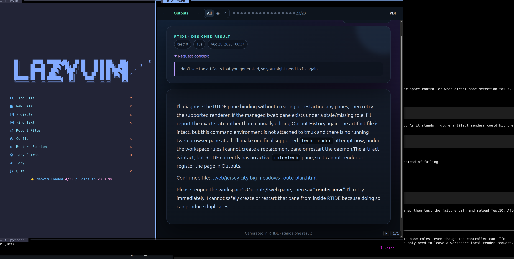

01 / OUTPUT
Answers become artifacts.
RTIDE asks agents to choose the visual form that fits: timelines, maps, comparison grids, research briefs, diagrams, or focused prose.
researchshaperender
Rich terminal IDE
RTIDE keeps the agent prompt fast and focused while every substantial answer becomes a rich, browsable visual artifact.
curl -fsSL https://raw.githubusercontent.com/achagani/rtide/main/install.sh | bashOne workspace · two modes of thought
Code remains tactile in Neovim. The agent stays a compact command deck. Research, plans, diagrams, and artifacts open in tweb—ready to browse, revisit, or export.

Agent input
Steer, interrupt, queue, resend, or dictate.
Visual output
Artifacts, history, navigation, and clean PDF export.
Editor context
Real files open directly in Neovim as the agent works.
01 / OUTPUT
RTIDE asks agents to choose the visual form that fits: timelines, maps, comparison grids, research briefs, diagrams, or focused prose.
02 / FLOW
Queue follow-ups while a turn runs. Steer without restarting. Use voice when typing gets in the way.
03 / MEMORY
Browse responses and artifacts independently, jump with arrow keys, filter the archive, and export the work that matters.
04 / CHOICE
Claude, Codex, Hermes, or OpenCode—backed by Anthropic, OpenAI, or local Ollama models. RTIDE is the workspace layer, not another lock-in.
Build in the terminal. Present on the web.